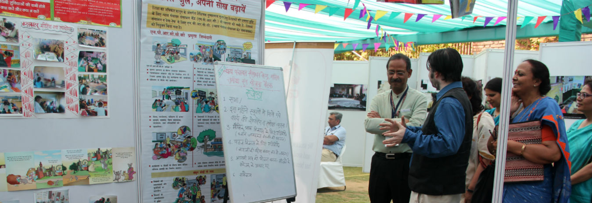

USAID AND CARE INDIA ORGANISE NATIONAL READING CONFERENCE

The U.S. Agency for International Development (USAID) and CARE India organized a national reading conference today in New Delhi to highlight seven effective ways to improve reading levels in India’s schools. Mr. Anil Swarup, Secretary, MHRD, was present and gave the keynote address.
The conference focused on integrating seven key early language and literacy principles in classrooms across India. The seven principles are based on findings of a 2016 Position Paper commissioned by CARE India and USAID, titled “Early Language and Literacy in India.” The key principles identified are: (1) link oral language to literacy; (2) emphasize independent writing and drawing as forms of expression; (3) develop multilingual capacities; (4) focus on a comprehensive model of instruction; (5) consider literacy instruction as a socio-culturally and socio-politically embedded set of practices; (6) use a gradual release of responsibility model of literacy; and (7) use good literature to form an integral fabric of classroom pedagogy.
More than 100 people including representatives from the Government of India, the National Council of Educational Research and Training (NCERT), National Council for Teachers Education (NCTE), State Councils of Educational Research and Training (SCERTs), NGOs, corporate partners, and academia research organizations participated in the conference.
Speaking at the inaugural session, Anil Swarup, Secretary, Ministry of Human Resource Development shared, “Government can certainly scale up initiatives, however, quality comes from civil society and we need to work in tandem to achieve desired results. To make any idea sustainable, it should be politically acceptable, socially desirable, technologically feasible and, most importantly, financially viable. The government is open to partnerships as we have to work together to spread and replicate any exemplary work. We have to think innovatively to make a good idea actionable.”
Highlighting the importance of putting the seven key principles into practice, Mark White, USAID Mission Director to India, added: “USAID strongly believes that reading is not only the foundation for basic literacy, it can greatly increase the number of economic opportunities available. In fact, studies indicate that earnings increase by 10 percent with each additional year of schooling. These seven principles that came out of the position paper can help teachers in day-to-day classroom activities. They can help government officials make policies geared towards improving the quality of education in India.”
The participants also walked through a Reading Haat set up like an open-air market with interactive exhibits showcasing the work of select organizations in early literacy. The displays demonstrated reading practices based on the seven principles, which have been successful in influencing reading levels of children from marginalized communities.
Delivering the welcome address. Mr. Rajan Bahadur, MD and CEO, CARE India said, “The exhibits today aim to highlight key literacy principles, pivotal towards implementing any literacy program. The Reading Haat is a visual medium through which, these seven principles can be seen through mediums of simulation, role play, model and presentation. The key value which also emerges is the cost-benefit analysis for each of these models.”
Yamini Iyer, Board Member, CARE India, shared that, “We really need to see ways to bridge the current gaps in education in our country and also assist pro-actively in devising strategies to see how early learning can be truly productive. Good ideas must be aided to make them workable and scalable. And scaling can only occur when the Government adopts good practices. Our role as civil society is to start small and take on the bigger challenge of building them into larger programs through advocacy with the Government.”
During the second half of the day, the practitioners also participated in a panel discussion to identify solutions for the MHRD’s early learning program for children. The panel discussion included experts and government officials who considered strategies to mainstream these principles and best practices across the education system.
Following the event, a select group will develop key recommendations for educational policy and practice, clearly articulating the areas of focus and requisite resources needed to positively impact early language and literacy programming for the most marginalized in the country.